Vecinos de Salou , Cambrils y Tarragona lamentan que la policía no les advirtiera del riesgo tras recibir los anónimos.
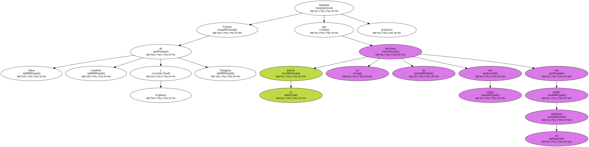La ola de explosiones que ha padecido Salou en las últimas tres semanas ha desatado el temor de los vecinos de la Costa Daurada , muchos de los cuales han renunciado a visitar las playas.
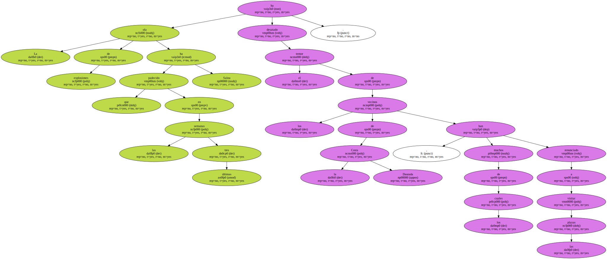Algunos habitantes de las localidades incluidas en la campaña de amenazas han recriminado a las autoridades que no se les hubiera alertado con anterioridad del peligro que corrían.
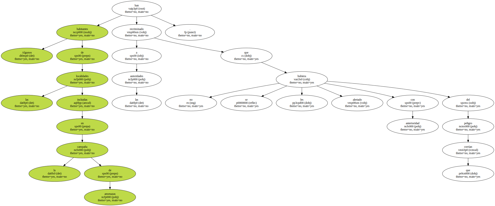" No he vuelto a la playa , y por ahora no pienso hacerlo " , sostiene Rebeca López , vecina de Cala Crancs , el lugar donde resultó herido el artificiero de la Guardia Civil Luis Marfil , al estallarle una bomba colocada en la arena.
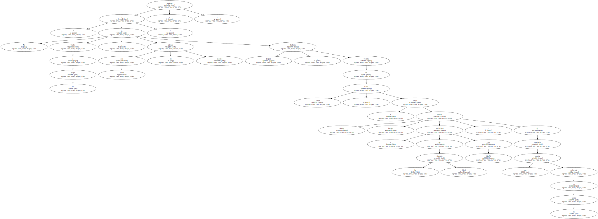La mujer asegura que ha cambiado sus hábitos a raíz de la explosión : " Yo bajaba cada día a pasear a los perros y desde entonces voy a otro sitio ".
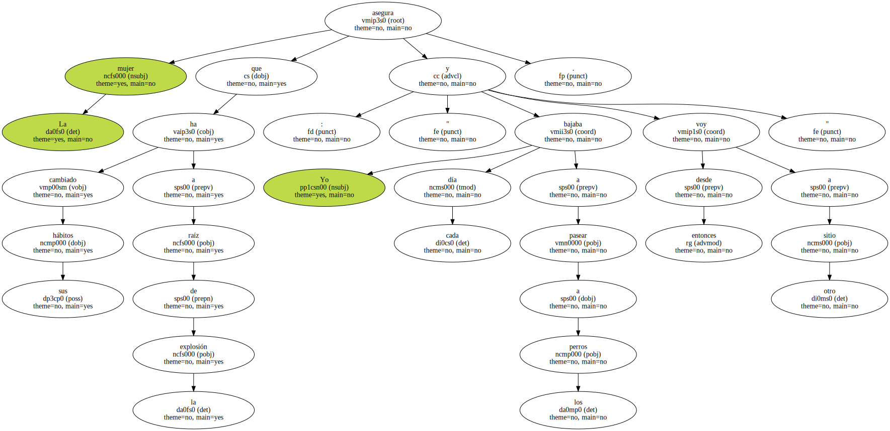Los residentes en este tranquilo paraje de la Costa Daurada viven con temor.
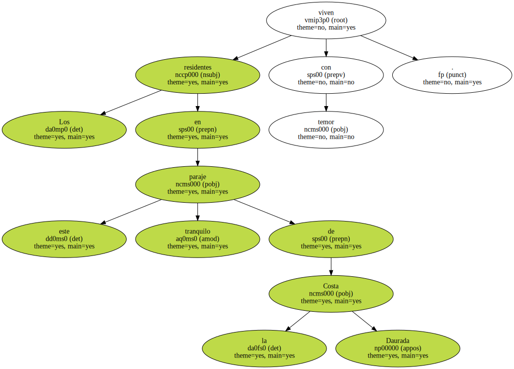Marta Toledo , española de origen peruano , y su marido , John Ross , británico , regentan un bar y también han tomado precauciones.
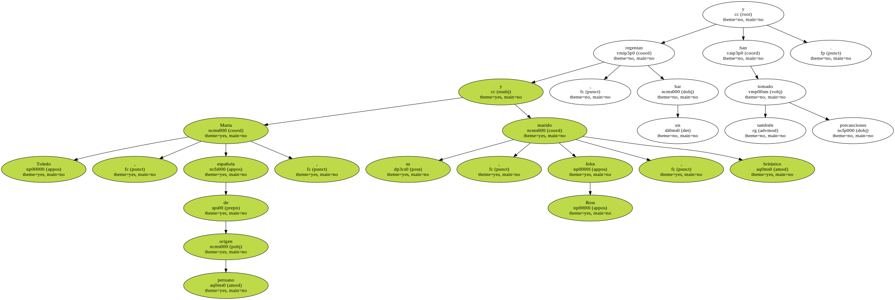" Pienso que es una locura bajar a la playa hasta que no se haya resuelto el caso " , dice Marta.
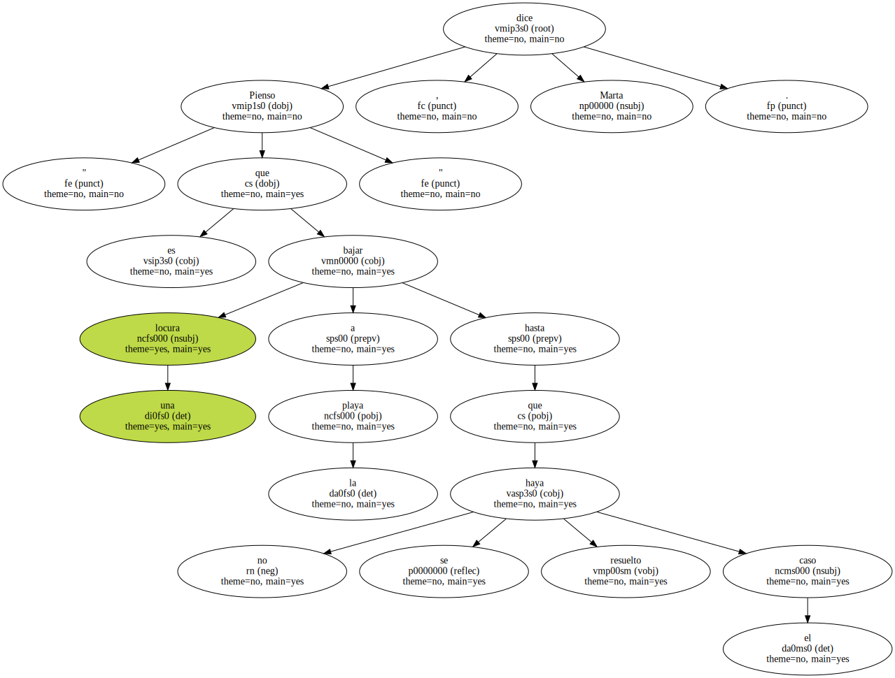También se queja de que existe poca vigilancia : " Es un rincón muy solitario ".
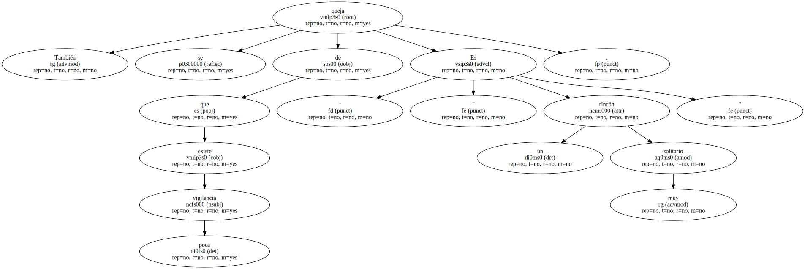La mujer recuerda que en Cala Crancs juegan familias enteras en la arena , por lo que pudo ocurrir una tragedia.
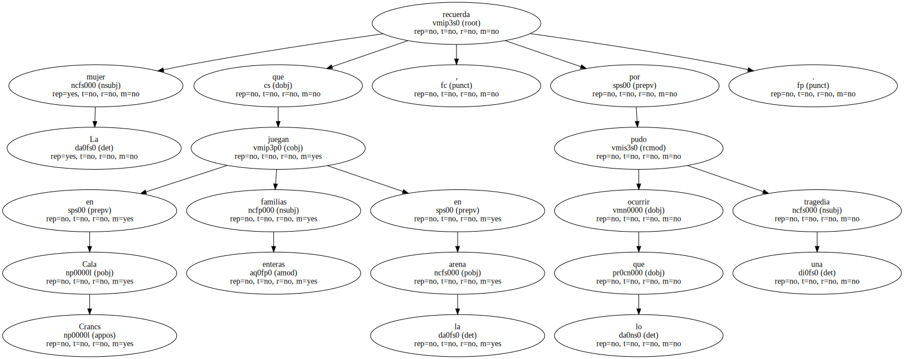Otra vecina manifiesta que su comportamiento no ha variado y afirma que en la zona reina la tranquilidad : " La bomba del día 21 fue una anécdota ".
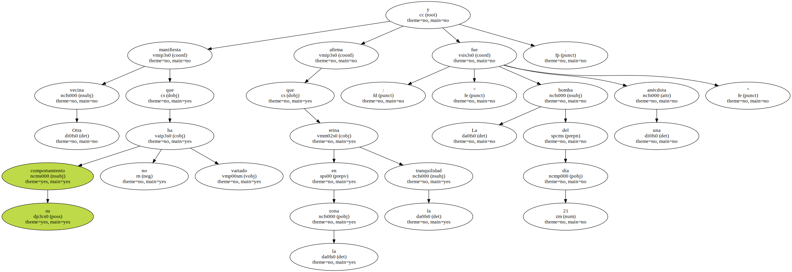Todo lo contrario de Rebeca , que augura : " Pondrán más explosivos ".
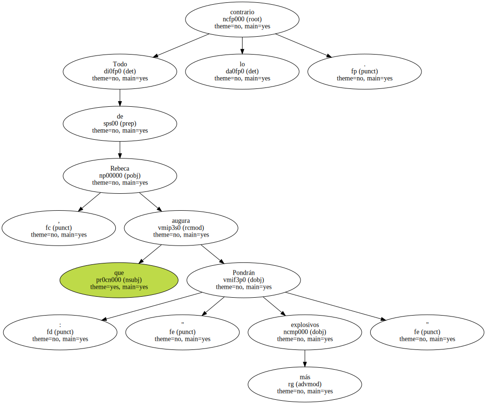No aparecen más artefactos.

La mayoría piensa que el Ayuntamiento de Salou y la policía , que conocían las amenazas , debían haber avisado a la población.
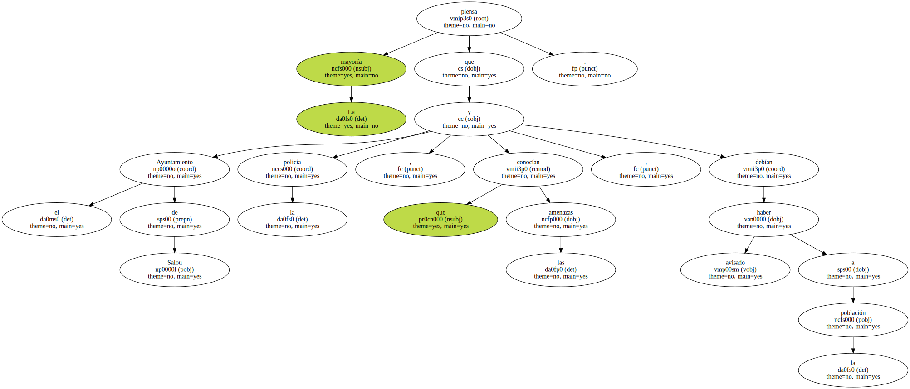" Si se hubiera advertido a la gente de que no tocaran objetos sospechosos , no hubiera muerto aquel anciano " , afirma David , en referencia a Juan Manuel Sarmiento , el jubilado fallecido el día 13 al manipular un artefacto que había encontrado en la playa de Llevant.
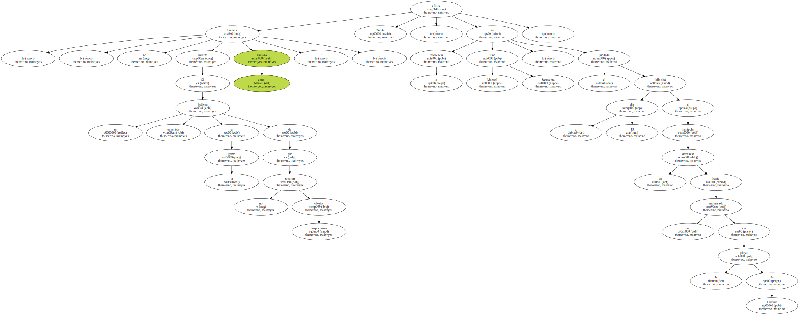Cándida Lasbats , su viuda , echó en cara hace una semana a Esteve Ferran , alcalde de Salou , que no se hubiese alertado del peligro.
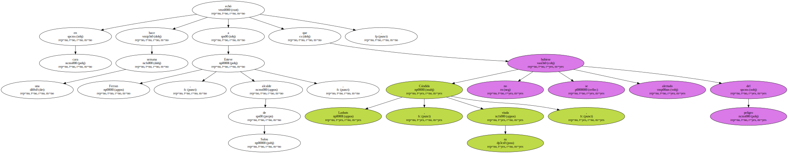Aunque se justificó la discreción en necesidades de la propia investigación , fuentes municipales de Salou reconocieron que inicialmente no se había dado credibilidad a la extorsión y se quería evitar la alarma por las negativas consecuencias que pudiera tener en el sector turístico.
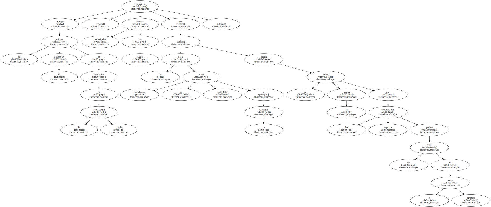El rotativo británico The Times y las agencias Associated Press y France Presse informaron de los sucesos , aunque no le dedicaron excesivo espacio y el tratamiento no fue sensacionalista.
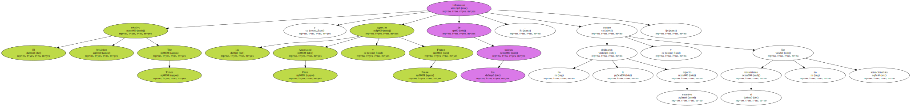El impacto de los aludes en los Alpes y el hecho de que las explosiones de Salou no se vincularan con una actuación terrorista desviaron la atención informativa , según explicaron fuentes de los turoperadores de la zona.
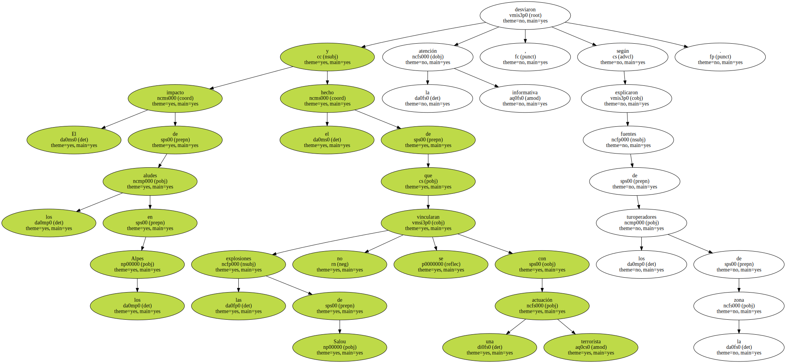Los artificieros de la Guardia Civil y del Ejército que han peinado las playas de Tarragona , Salou ( Tarragonès ) y Cambrils ( Baix Camp ) no han localizado ningún artefacto durante el fin de semana.
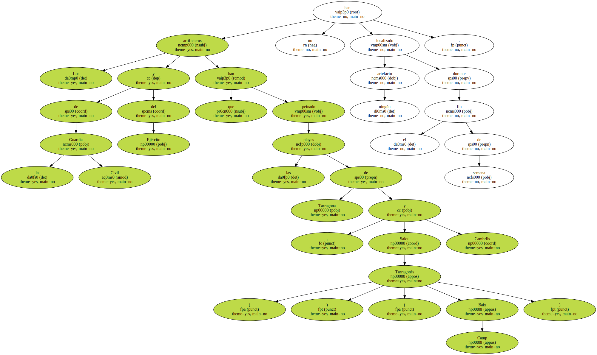Los responsables de la investigación creen poco probable que haya más bombas enterradas en la Costa Daurada , como indicaban los anónimos recibidos por los patronatos de turismo de las tres localidades.
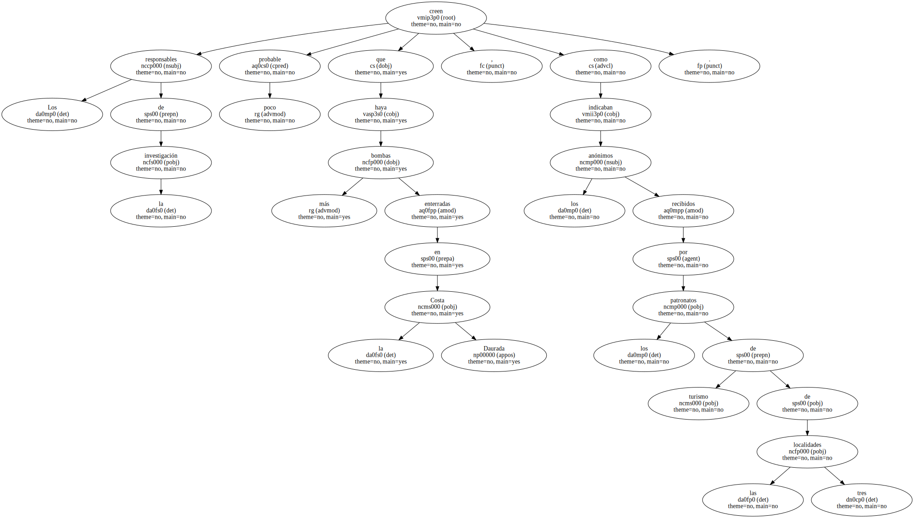